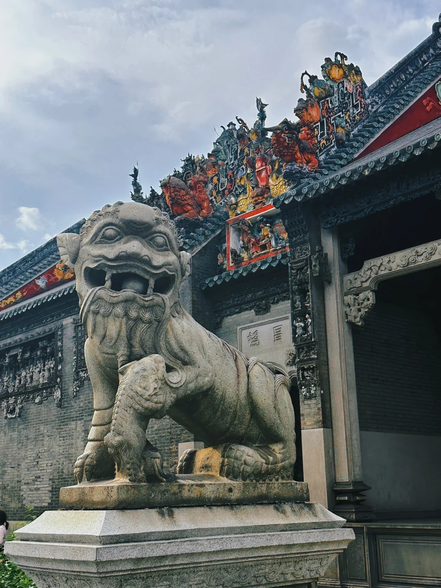

广东民间工艺博物馆，又名陈氏书院、陈家祠，是广州地区极具代表性的建筑物之一，也是全国重点文物保护单位。其建筑规模宏大，纹饰精美华贵，集岭南木雕，石雕，砖雕，陶塑，灰塑，铜铁铸，彩绘等工艺之大成。清代的广州城，是华南地区政治、经济，文化中心，它是两广总督府，广东巡抚衙门的所在地，也是广州府治，番禺县治和南海县治所在地。官衙，学宫，商铺林立，广东各地官员，商人，士子，以及普通百姓需要经常出入省城，因而广州城内常常一房难求。为了满足广东各地各种人员，来省城落脚办事的需求，各姓组织省内同姓宗族，在广州兴建祠堂式建筑，为到广州城应试，诉讼，交税，侯任的乡下同姓子弟提供居所。自清代乾隆中期开始，合族祠因为“把持讼事，挟众抗官”引发官府一次又一次的禁祠行动，广州城内许多合族祠也因此被禁，于是各姓合族祠纷纷改名为“书院”“试馆”“书室”，陈家祠之所以被题匾为“陈氏书院”也由于此原因。

广州五羊仙人是广州城市传说中的重要角色。 五羊仙人传说起源于明代末期，当时广州地区遭遇了一场严重的饥荒。据说，有一天，南海上空传来美妙悠扬的仙乐，随后便飘来五朵彩色祥云，五位身穿五色彩衣的仙人飘降在广州城，他们手持稻谷、甘蔗、荔枝、芒果和龙眼，为百姓带来了希望和生机。五羊仙人各有不同的外貌特征和武器。 头羊仙人名叫五色，他身穿青色长袍，手持稻谷，代表着希望与丰收； 二羊仙人名叫斑斓，身穿黄色长袍，手持甘蔗，代表着甜蜜与和谐； 三羊仙人名叫多福，身穿红色长袍，手拿荔枝，代表着幸福与健康； 四羊仙人名叫百财，身穿绿色长袍，手握芒果，代表着财富与事业； 最后是五羊仙人，名叫团圆，身穿紫色长袍，手握龙眼，代表着团圆与和睦。 五羊仙人们出现在广州城的各个角落，他们帮助百姓解决各种困难。 在传说中，五羊仙人不仅给予百姓物质上的帮助，还为他们提供精神上的慰藉。在五羊仙人的帮助下，广州城逐渐恢复了往日的繁荣与生机。 因此，广州被称为“羊城”，也称为“五羊城”或“穗城”。 为了纪念这个传说，在广州惠福路修建了五仙观，观内大殿还有五仙和五羊的塑像，现在仙观的东侧还有一块巨大的红砂岩好像脚印状的凹石，被称作仙人拇迹。 五羊仙人的传说对广州文化有着深远的影响。首先，他们代表着广州人民的善良和正义，传达着乐于助人、关爱他人的精神。 其次，五羊仙人是广州文化的象征之一，许多文艺作品以他们为主题，如歌曲、电影和电视剧等。 最后，五羊仙人的传说成为广州城市文化的一部分，使得人们对这座城市有着更深的了解和认识。 总之，五羊仙人是广州城市传说中的重要角色，他们的善良和正义感动着一代又一代的广州人民。通过深入了解五羊仙人的传说，我们可以更好地理解广州文化的深厚底蕴和独特魅力。

粤剧，又称广府戏、广东大戏，流行于珠江三角洲等广府民系聚居地，是广东及广西粤方言区最大的剧种。发源于佛山，以粤方言演唱，汉族传统戏曲之一、人类非物质文化遗产代表作。粤剧源自南戏，是以明清时期流入广东的海盐腔、弋阳腔、昆山腔、梆子腔等诸腔为基础，并吸收珠江三角洲的民间音乐所形成。